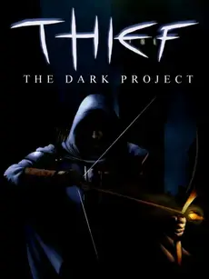

 |
|
| Tiempo de juego | 30s |
| Última actividad | 14/1/2026 14:42:00 |
| Añadido | 17/11/2025 18:16:46 |
| Modificado | 10/12/2025 13:53:13 |
| Estado de finalización | Jugado |
| Librería | Playnite |
| Fuente | |
| Plataforma | PC (Windows) |
| Fecha de lanzamiento | 30/11/1998 |
| Puntuación de la Comunidad | 87 |
| Puntuación de la Crítica | 70 |
| Puntuación de usuario | |
| Género | Adventure Simulator |
| Desarrollador | Looking Glass Studios |
| Editor | Activision Value Eidos Interactive |
| Característica | Single Player |
| Enlaces | GOG |
| Tag | |
En una ciudad oscura y gótica donde las farolas apenas rompen la penumbra, las sombras son tu único aliado y el silencio tu mejor virtud. Sos un maestro del sigilo, un ladrón legendario que se mueve como un fantasma por los tejados y callejones, siempre al acecho del próximo botín.
Tu trabajo te lleva a infiltrarte en mansiones vigiladas, templos ancestrales y fortalezas imponentes para robar tesoros y secretos bien guardados. Acá, la fuerza bruta te lleva a la muerte; la clave para sobrevivir y tener éxito es ser invisible y silencioso.
Dependés de tu oído para detectar a los guardias antes de que te vean y de la iluminación para saber si estás oculto o expuesto. Contás con un arsenal ingenioso de flechas especiales que te permiten manipular el entorno (apagar luces o crear superficies blandas para caminar sin hacer ruido) y superar obstáculos sin dejar rastro. Cada paso que das, cada sombra que te cobija, es una decisión crítica. Es una experiencia pionera que te sumerge por completo en la vida de un ladrón profesional en un mundo rico en lore, peligro y misterio.
Un clásico del sigilo en primera persona que te desafía a ser una sombra.